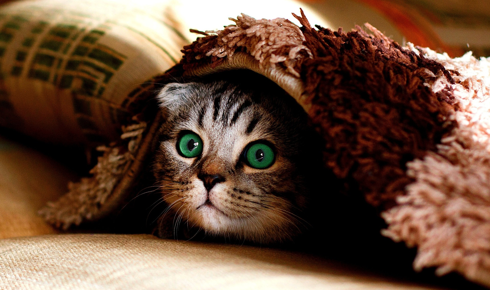

Hallo, ich bin Teddy
- Alter:5 Jahre
- Hoehe:70cm
- Rasse:Golden Retriever


Ich bin ein Hund, habe weiches goldenes Fell und suesse Kulleraugen.
Ich mag:
- Eichhoernchen jagen
- Mein Essen und meine Leckerlies
- spielen
- Die Nachbarskatze Maya nerven (so sieht sie aus:)

Wie ich die Kamera entdeckte: